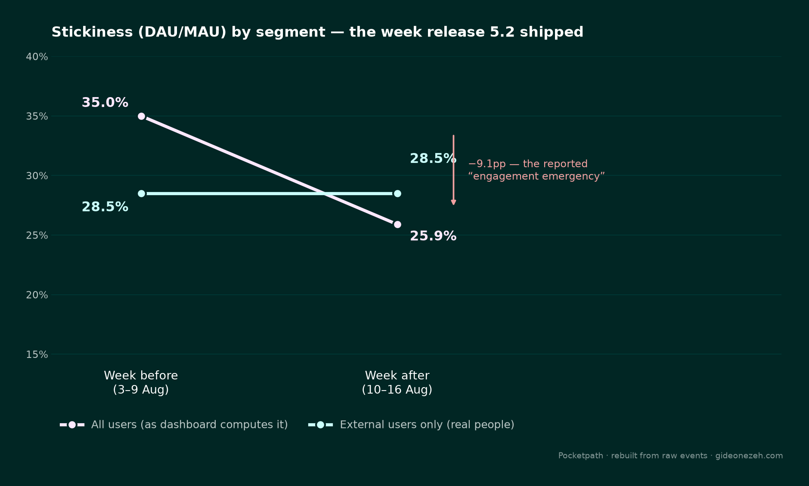

The Stickiness Cliff
DAU/MAU fell from 35% to 28% the week a new release shipped, and growth paused the roadmap over an "engagement emergency." Rebuilding the metric from raw events told a different story.

The Brief
"Stickiness — DAU over MAU — was 35% the week before release 5.2 shipped and 28% the week after. Seven points in a week. I am pausing the roadmap until we understand what 5.2 did to engagement," the growth lead wrote. Nobody had rebuilt the number from the raw events — the dashboard figure was being taken at face value.
I was given seven weeks of app_open events and a user dimension table for Pocketpath, a habit-tracking app, and asked to rebuild stickiness for the week before and after the release, explain the drop, and decide whether it was actually an emergency. Three things were flagged going in:
- Some accounts in the user table are internal QA automation (
is_internal) — nobody had checked whether the dashboard excludes them. - An iOS double-logging bug was fixed in a later release, but engineering was vague about when it started.
- Release 5.2 also changed where the QA fleet's traffic points, from production to staging.
What the headline number hid
None of that was visible from the dashboard's single blended number — it only surfaced once the metric was rebuilt from raw events and segmented by account type.
The Investigation
- Rebuilt active-user-days directly from raw events, deduplicated to one row per user per UTC calendar day — which also neutralizes any double-logging at the source, since a metric built on unique user-days doesn't care how many times a duplicate event fired within a day.
- Built a calendar spine with a recursive CTE to anchor a rolling-window calculation, since SQL Server has no native
COUNT(DISTINCT ...)window function. - Computed DAU and a true rolling 28-day MAU (per the brief — not calendar month) for every day in range, joined into a daily stickiness ratio.
- Segmented the result three ways — All / External / Internal — so the effect of internal accounts is visible directly instead of asserted.
- Separately audited for exact-duplicate event rows to characterize the double-logging bug's actual timing, since "engineering was vague about when it started" wasn't good enough to rule it out as a cause.
-- Calendar spine, to anchor the rolling window
;WITH bounds AS (
SELECT MIN(activity_date) AS min_dt, MAX(activity_date) AS max_dt
FROM daily_active_users
),
spine AS (
SELECT min_dt AS activity_date FROM bounds
UNION ALL
SELECT DATEADD(day, 1, activity_date)
FROM spine, bounds
WHERE spine.activity_date < bounds.max_dt
)
SELECT activity_date INTO calendar FROM spine
OPTION (MAXRECURSION 0);
-- Rolling 28-day MAU: no native COUNT(DISTINCT ...) window function in
-- SQL Server, so this self-joins each calendar day against the 28 days
-- of activity behind it.
SELECT c.activity_date, s.segment, COUNT(DISTINCT s.user_id) AS mau
INTO daily_mau
FROM calendar c
JOIN dau_segmented s
ON s.activity_date BETWEEN DATEADD(day, -27, c.activity_date) AND c.activity_date
GROUP BY c.activity_date, s.segment;What broke
| Segment | Week before (3–9 Aug) | Week after (10–16 Aug) |
|---|---|---|
| All users (as the dashboard computes it) | 35.0% | 25.9% |
| External users only (real people) | 28.5% | 28.5% |
Real-user stickiness didn't move. The entire drop traces to internal QA accounts: 5.2 rerouted the QA fleet from production to staging, so roughly 400 QA accounts that had been generating ~1,800 events a day dropped to zero overnight on release day.
DAU — the numerator — lost those accounts immediately. MAU — the denominator — is a rolling 28-day window, and those same accounts had been active every day up to the cutover, so they stayed counted in MAU for weeks afterward, decaying only as the window slid past them. Numerator craters instantly, denominator barely moves in the short term: a manufactured cliff with no connection to actual user behavior.
A second bug, unrelated
The duplicate-event audit surfaced roughly 14,000 exact-duplicate iOS event rows — but concentrated from 17 August onward, a week after the release, not at the release itself. It doesn't affect the before/after comparison in question, but it would silently inflate any metric built on raw event counts rather than deduplicated user-days (opens per user, session counts) for that later window.
The verdict
Not an emergency. Two concrete fixes:
- Exclude
is_internal = 1from the stickiness dashboard permanently, and re-baseline the historical series — this exact class of false alarm will recur every time QA's traffic footprint shifts. - Get a firm start date for the iOS double-logging bug from engineering and confirm the fix actually landed, since any event-count-based metric covering late August is currently unreliable.
Want to see the full SQL?
The complete script — diagnostic query, deduplicated daily-active-users build, calendar spine, three-way segmentation, and the rolling-MAU join — is written to be re-run end to end.